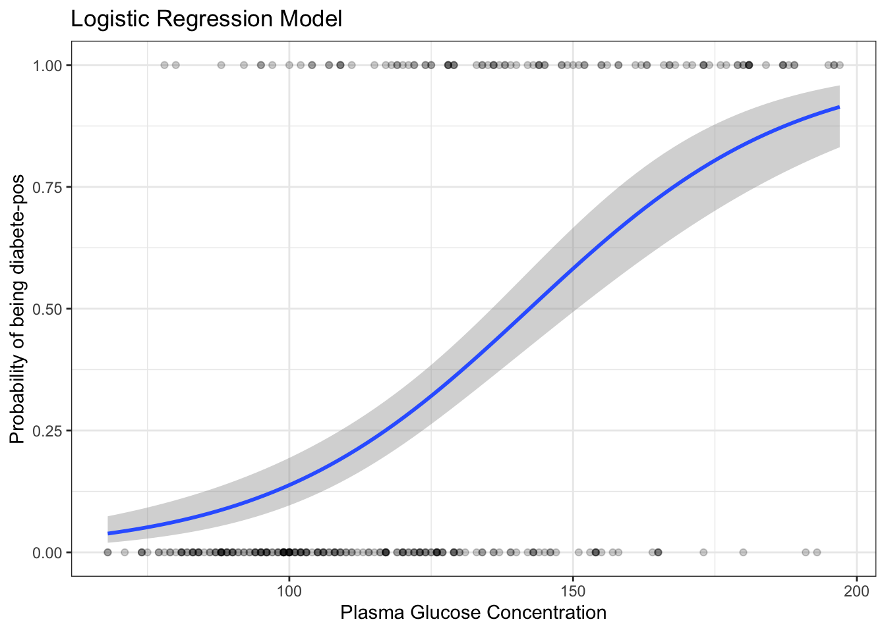
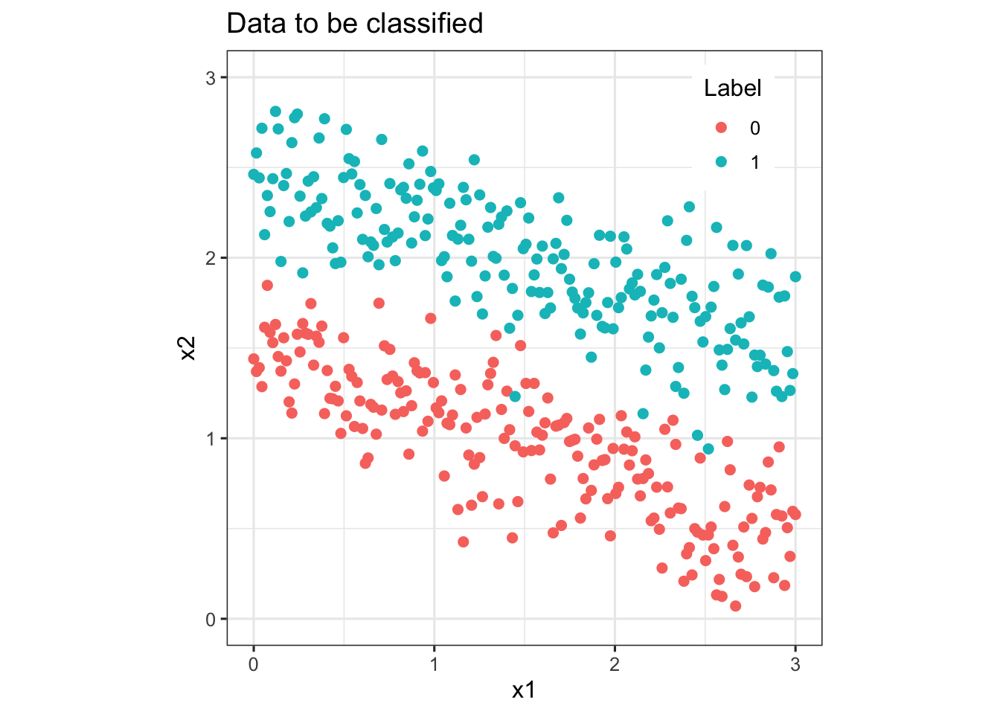
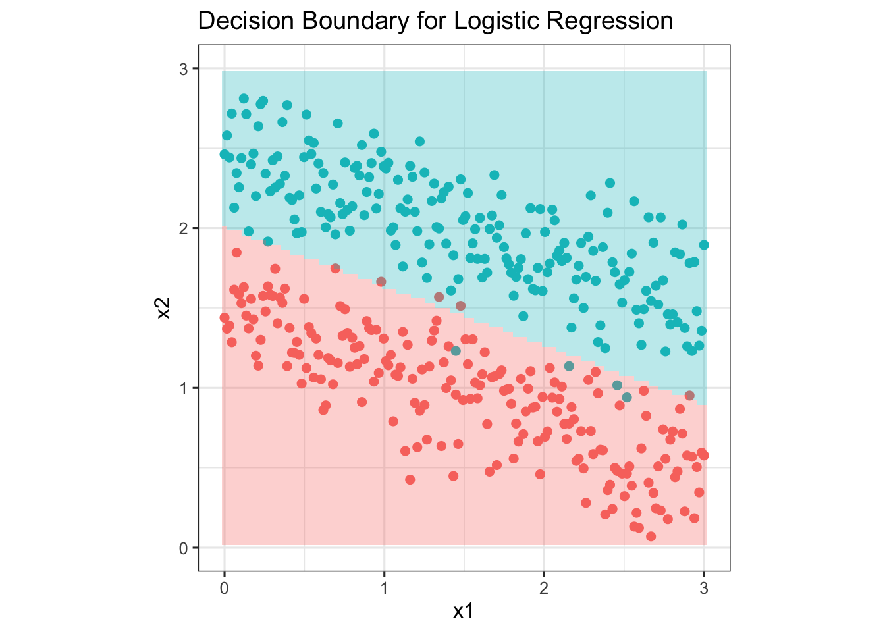

Logistic Regression Practical
Classes PowerPoint Presentation
#| echo: false #| results: hide #| output: false #| include: false
Load the data and remove NAs
Inspect the data
sample_n(PimaIndiansDiabetes2, 3) pregnant glucose pressure triceps insulin mass pedigree age diabetes
748 1 81 74 41 57 46.3 1.096 32 neg
611 3 106 54 21 158 30.9 0.292 24 neg
727 1 116 78 29 180 36.1 0.496 25 negSplit the data into training and test set
set.seed(123)
training.samples <- PimaIndiansDiabetes2$diabetes %>%
createDataPartition(p = 0.8, list = FALSE)
train.data <- PimaIndiansDiabetes2[training.samples, ]
test.data <- PimaIndiansDiabetes2[-training.samples, ]Fit the model
model <- glm( diabetes ~., data = train.data, family = binomial)Summarize the model
summary(model)
Call:
glm(formula = diabetes ~ ., family = binomial, data = train.data)
Deviance Residuals:
Min 1Q Median 3Q Max
-2.5832 -0.6544 -0.3292 0.6248 2.5968
Coefficients:
Estimate Std. Error z value Pr(>|z|)
(Intercept) -1.053e+01 1.440e+00 -7.317 2.54e-13 ***
pregnant 1.005e-01 6.127e-02 1.640 0.10092
glucose 3.710e-02 6.486e-03 5.719 1.07e-08 ***
pressure -3.876e-04 1.383e-02 -0.028 0.97764
triceps 1.418e-02 1.998e-02 0.710 0.47800
insulin 5.940e-04 1.508e-03 0.394 0.69371
mass 7.997e-02 3.180e-02 2.515 0.01190 *
pedigree 1.329e+00 4.823e-01 2.756 0.00585 **
age 2.718e-02 2.020e-02 1.346 0.17840
---
Signif. codes: 0 '***' 0.001 '**' 0.01 '*' 0.05 '.' 0.1 ' ' 1
(Dispersion parameter for binomial family taken to be 1)
Null deviance: 398.80 on 313 degrees of freedom
Residual deviance: 267.18 on 305 degrees of freedom
AIC: 285.18
Number of Fisher Scoring iterations: 5Make predictions
Model accuracy
mean(predicted.classes == test.data$diabetes)[1] 0.7564103 Estimate Std. Error z value Pr(>|z|)
(Intercept) -6.15882009 0.700096646 -8.797100 1.403974e-18
glucose 0.04327234 0.005341133 8.101716 5.418949e-16newdata <- data.frame(glucose = c(20, 180))
probabilities <- model %>% predict(newdata, type = "response")
predicted.classes <- ifelse(probabilities > 0.5, "pos", "neg")
predicted.classes 1 2
"neg" "pos" train.data %>%
mutate(prob = ifelse(diabetes == "pos", 1, 0)) %>%
ggplot(aes(glucose, prob)) +
geom_point(alpha = 0.2) +
geom_smooth(method = "glm", method.args = list(family = "binomial")) +
labs(
title = "Logistic Regression Model",
x = "Plasma Glucose Concentration",
y = "Probability of being diabete-pos"
)`geom_smooth()` using formula = 'y ~ x'
model <- glm( diabetes ~ glucose + mass + pregnant,
data = train.data, family = binomial)
summary(model)$coef Estimate Std. Error z value Pr(>|z|)
(Intercept) -9.32369818 1.125997285 -8.280391 1.227711e-16
glucose 0.03886154 0.005404219 7.190962 6.433636e-13
mass 0.09458458 0.023529905 4.019760 5.825738e-05
pregnant 0.14466661 0.045125729 3.205857 1.346611e-03 Estimate Std. Error z value Pr(>|z|)
(Intercept) -1.053400e+01 1.439679266 -7.31690975 2.537464e-13
pregnant 1.005031e-01 0.061266974 1.64041157 1.009196e-01
glucose 3.709621e-02 0.006486093 5.71934633 1.069346e-08
pressure -3.875933e-04 0.013826185 -0.02803328 9.776356e-01
triceps 1.417771e-02 0.019981885 0.70952823 4.779967e-01
insulin 5.939876e-04 0.001508231 0.39383055 6.937061e-01
mass 7.997447e-02 0.031798907 2.51500698 1.190300e-02
pedigree 1.329149e+00 0.482291020 2.75590704 5.852963e-03
age 2.718224e-02 0.020199295 1.34570257 1.783985e-01coef(model) (Intercept) pregnant glucose pressure triceps
-1.053400e+01 1.005031e-01 3.709621e-02 -3.875933e-04 1.417771e-02
insulin mass pedigree age
5.939876e-04 7.997447e-02 1.329149e+00 2.718224e-02 model <- glm( diabetes ~ pregnant + glucose + pressure + mass + pedigree,
data = train.data, family = binomial)
probabilities <- model %>% predict(test.data, type = "response")
head(probabilities) 19 21 32 55 64 71
0.1352603 0.5127526 0.6795376 0.7517408 0.2734867 0.1648174 contrasts(test.data$diabetes) pos
neg 0
pos 1 19 21 32 55 64 71
"neg" "pos" "pos" "pos" "neg" "neg" mean(predicted.classes == test.data$diabetes)[1] 0.7564103library("mgcv")Loading required package: nlme
Attaching package: 'nlme'
The following object is masked from 'package:dplyr':
collapse
This is mgcv 1.8-42. For overview type 'help("mgcv-package")'.# Fit the model
gam.model <- gam(diabetes ~ s(glucose) + mass + pregnant,
data = train.data, family = "binomial")
# Summarize model
summary(gam.model )
Family: binomial
Link function: logit
Formula:
diabetes ~ s(glucose) + mass + pregnant
Parametric coefficients:
Estimate Std. Error z value Pr(>|z|)
(Intercept) -4.59794 0.86982 -5.286 1.25e-07 ***
mass 0.09458 0.02353 4.020 5.83e-05 ***
pregnant 0.14467 0.04513 3.206 0.00135 **
---
Signif. codes: 0 '***' 0.001 '**' 0.01 '*' 0.05 '.' 0.1 ' ' 1
Approximate significance of smooth terms:
edf Ref.df Chi.sq p-value
s(glucose) 1 1 51.71 <2e-16 ***
---
Signif. codes: 0 '***' 0.001 '**' 0.01 '*' 0.05 '.' 0.1 ' ' 1
R-sq.(adj) = 0.339 Deviance explained = 29.8%
UBRE = -0.083171 Scale est. = 1 n = 314# Make predictions
probabilities <- gam.model %>% predict(test.data, type = "response")
predicted.classes <- ifelse(probabilities> 0.5, "pos", "neg")
# Model Accuracy
mean(predicted.classes == test.data$diabetes)[1] 0.7820513optional ========================================================================
Example implementation from scratch:
library(ggplot2)
library(dplyr)
N <- 200 # number of points per class
D <- 2 # dimensionality, we use 2D data for easy visualization
K <- 2 # number of classes, binary for logistic regression
X <- data.frame() # data matrix (each row = single example, can view as xy coordinates)
y <- data.frame() # class labels
set.seed(56)
t <- seq(0,1,length.out = N)
for (j in (1:K)){
# t, m are parameters of parametric equations x1, x2
# t <- seq(0,1,length.out = N)
# add randomness
m <- rnorm(N, j+0.5, 0.25)
Xtemp <- data.frame(x1 = 3*t , x2 = m - t)
ytemp <- data.frame(matrix(j-1, N, 1))
X <- rbind(X, Xtemp)
y <- rbind(y, ytemp)
}
data <- cbind(X,y)
colnames(data) <- c(colnames(X), 'label')
# create dir images
#dir.create(file.path('.', 'images'), showWarnings = FALSE)
# lets visualize the data:
data_plot <- ggplot(data) + geom_point(aes(x=x1, y=x2, color = as.character(label)), size = 2) +
scale_colour_discrete(name ="Label") +
ylim(0, 3) + coord_fixed(ratio = 1) +
ggtitle('Data to be classified') +
theme_bw(base_size = 12) +
theme(legend.position=c(0.85, 0.87))
#png(file.path('images', 'data_plot.png'))
print(data_plot)
#dev.off()
#sigmoid function, inverse of logit
sigmoid <- function(z){1/(1+exp(-z))}
#cost function
cost <- function(theta, X, y){
m <- length(y) # number of training examples
h <- sigmoid(X %*% theta)
J <- (t(-y)%*%log(h)-t(1-y)%*%log(1-h))/m
J
}
#gradient function
grad <- function(theta, X, y){
m <- length(y)
h <- sigmoid(X%*%theta)
grad <- (t(X)%*%(h - y))/m
grad
}
logisticReg <- function(X, y){
#remove NA rows
X <- na.omit(X)
y <- na.omit(y)
#add bias term and convert to matrix
X <- mutate(X, bias =1)
#move the bias column to col1
X <- as.matrix(X[, c(ncol(X), 1:(ncol(X)-1))])
y <- as.matrix(y)
#initialize theta
theta <- matrix(rep(0, ncol(X)), nrow = ncol(X))
#use the optim function to perform gradient descent
costOpti <- optim(theta, fn = cost, gr = grad, X=X, y=y)
#return coefficients
return(costOpti$par)
}
logisticProb <- function(theta, X){
X <- na.omit(X)
#add bias term and convert to matrix
X <- mutate(X, bias =1)
X <- as.matrix(X[,c(ncol(X), 1:(ncol(X)-1))])
return(sigmoid(X%*%theta))
}
logisticPred <- function(prob){
return(round(prob, 0))
}
# training
theta <- logisticReg(X, y)
prob <- logisticProb(theta, X)
pred <- logisticPred(prob)
# generate a grid for decision boundary, this is the test set
grid <- expand.grid(seq(0, 3, length.out = 100), seq(0, 3, length.out = 100))
# predict the probability
probZ <- logisticProb(theta, grid)
# predict the label
Z <- logisticPred(probZ)
gridPred = cbind(grid, Z)
# decision boundary visualization
p <- ggplot() + geom_point(data = data, aes(x=x1, y=x2, color = as.character(label)), size = 2, show.legend = F) +
geom_tile(data = gridPred, aes(x = grid[, 1],y = grid[, 2], fill=as.character(Z)), alpha = 0.3, show.legend = F)+
ylim(0, 3) +
ggtitle('Decision Boundary for Logistic Regression') +
coord_fixed(ratio = 1) +
theme_bw(base_size = 12)
#png(file.path('images', 'logistic_regression.png'))
print(p)Warning: Removed 200 rows containing missing values (`geom_tile()`).
#dev.off()